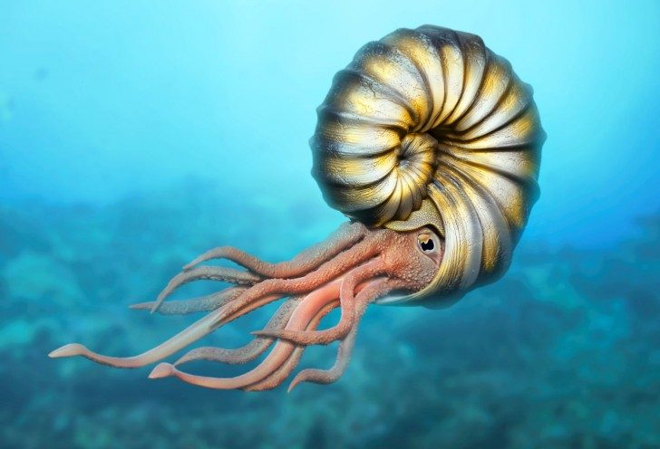
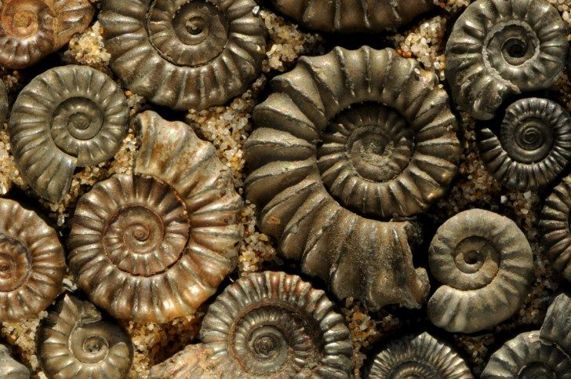
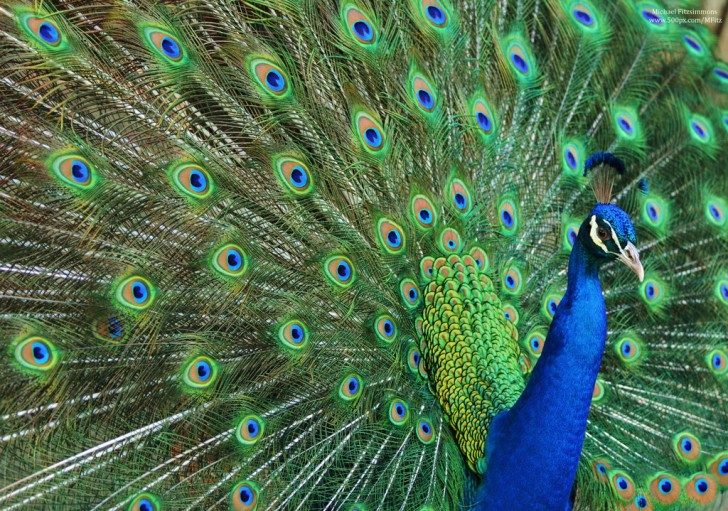
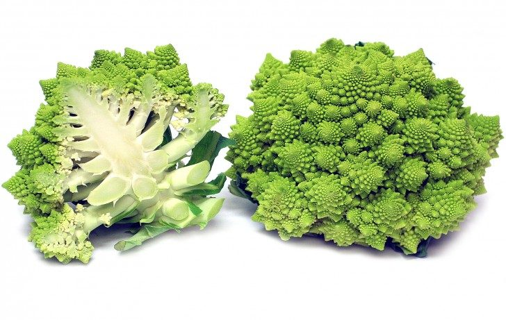
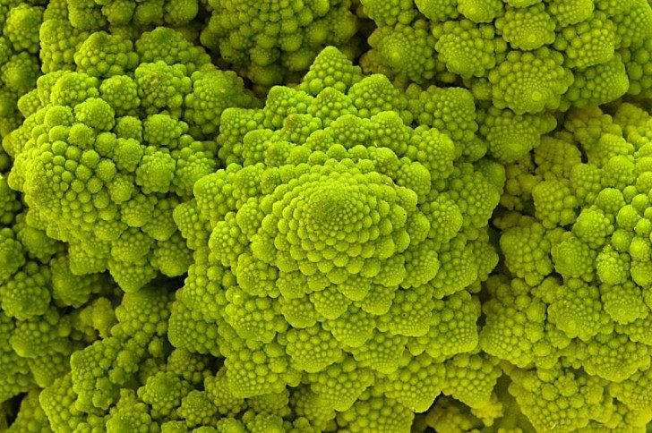

JAKIE FRAKTALE WYSTĘPUJĄ W PRZYRODZIE?
Amonity
Wymarłe 65 tysięcy lat temu amonity były morskimi głowonogami, które budowały spiralne, komorowe muszle. Ściany między poszczególnymi komorami zwane szwami były fraktalnie ułożonymi krzywymi.
Niektórzy naukowcy odwołują się do przykładu amonitów, wskazując, że w przyrodzie nie występuje rozwój w kierunku większej złożoności. Muszle amonitów przyrastają w kształcie spirali logarytmicznej – wzoru, który bardzo często pojawia się w przyrodzie. Struktura amonitów inspirowała niejednokrotnie architektów, np. podczas budowy schodów w katedrze w Barcelonie.
Pawie
Samiec tego ptaka przyciąga samice powtarzającym się wzorem upierzenia na swoim imponującym ogonie. Powtarzalność wzorów oznacza, iż tworzą one fraktal.

Brokuły
Ten naturalny wzór jest najlepszym przykładem na fraktale występujące w przyrodzie. Wzór wzrostu brokułu jest naturalną reprezentacją złotego podziału – ciągu Fibonacciego, spirali logarytmicznej, gdzie każde ćwierć obrotu jest oddalone od początku o współczynnik liczby pi.
 